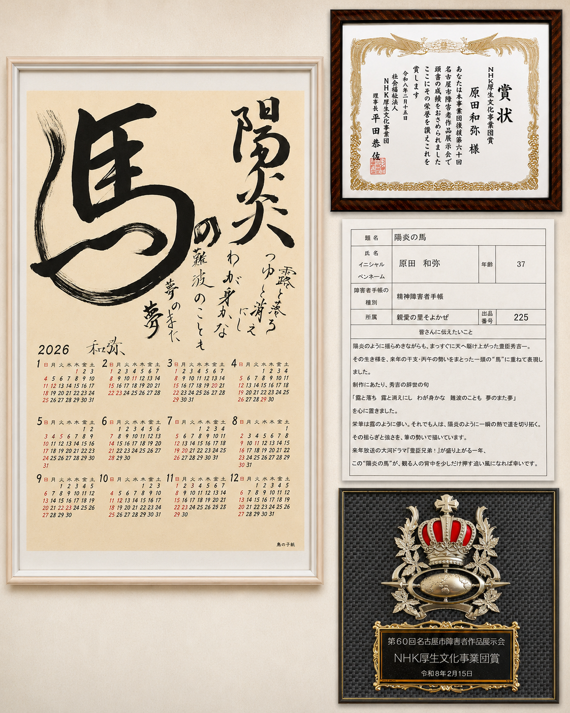

01 / TECHNOLOGY
技術
AI、アプリ開発、会計、設計、ものづくり。実際の生活の中で役立つ仕組みへ落とし込むことを大切にしています。
AIApp会計設計
龍和（RYUNA）こと原田和弥（HARATA KAZUYA）は、愛知県を拠点に活動しています。工業・ものづくりの経験を土台に、AI、アプリ開発、会計、創作、暮らし、福祉活動など、異なる分野を横断しながら「より良く生きるための仕組み」を自分なりの形にしています。
龍和（RYUNA）こと原田和弥（HARATA KAZUYA）は、愛知県を拠点に、技術・創作・暮らしを横断しながら活動しています。「龍和」は作品制作や思考の発信に用いている雅号です。
龍和とはTechnology / Creative / Life Design
AI、アプリ開発、会計、設計、ものづくり。実際の生活の中で役立つ仕組みへ落とし込むことを大切にしています。
絵、書、作品制作。言葉にならない感覚や記憶を、自分なりの形として残します。
家計、料理、園芸、ヨガ、生活環境。心身と暮らしの両方を整え、無理なく続けられる生活を考えています。
福祉制度や地域の社会資源を利用しながら、地域との関わりやボランティア活動を続けています。対話を大切にし、経験をリカバリーストーリーとして他者の回復につなげるピアサポート活動を目指しています。
福祉活動について
第60回名古屋市障害者作品展示会に出品した創作作品。豊臣秀吉の生き様と、丙午の勢いを一頭の「馬」に重ねて表現しました。
NHK厚生文化事業団賞公式ギャラリーを見る複式簿記をベースに、仕訳・損益・資産・年間振り返りまで扱えるパーソナル家計・会計アプリ。
MasterLedgerを開く愛知県で電気工学を学び、設計や技術の基礎を身につける。
製造・自動車関連の設計など、ものづくりの現場を経験。
絵や書などの創作活動を続け、作品展示・受賞へ。
生活上の課題を起点に、アプリ開発やAI活用へ領域を広げる。